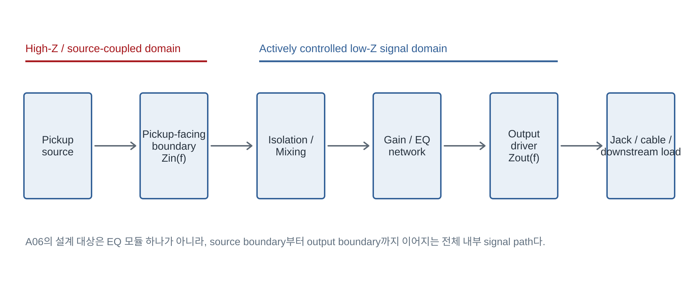
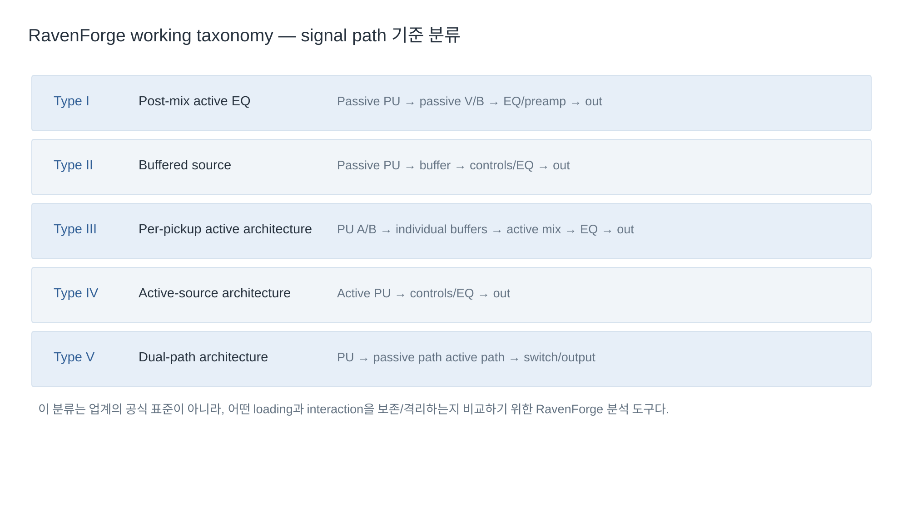
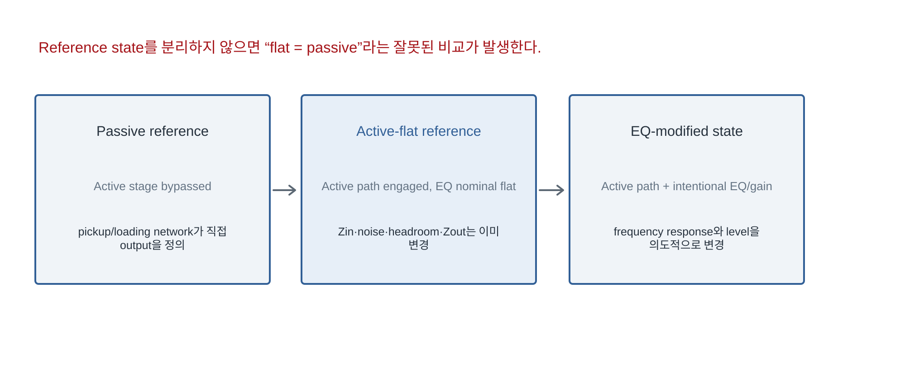

RAVENFORGE / SIGNAL & TRANSDUCTION RESEARCH LOG — A06
RAVENFORGE
Signal & Transduction Research Log
A06 — Onboard Preamp Architecture
Gain · Mixing · EQ · Output hinter der pickupseitigen Grenzbedingung als ein zusammenhängendes Low-Z-Signalsystem entwerfen
Dokumentzweck |
Code | A06 |
|---|---|
Fokus | Onboard-Preamp-Architektur · Pickup-Isolation · Mixing · Gain-Struktur · EQ/Filtergesetz · Ausgangsgrenze · Versorgung/Bypass |
Evidenz | technische Herstellerdokumentation · Analogschaltungs-App-Notes · Pickup-Modellierungsliteratur · RavenForge-Synthese |
RavenForge-Bezug | A05 aktive Grenzbedingung → A06 Onboard-Architektur → B06 interner Signalweg → A07 Headroom/Versorgung |
Vorgelagerte Logs | A03 · A04 · A05 · B03 |
Nachgelagerte Logs | B06 · A07 · A08 · C03/C04 (experiment deferred) |
Status | Literatur-/Technikprüfung abgeschlossen · Architekturrahmen etabliert · Prototypmessung ausstehend |
Datum | 2026-09-18 |

Abbildung 1. A06 Systemgrenze. Entwurfsgegenstand eines Onboard-Preamps ist nicht ein einzelnes EQ-Modul, sondern die gesamte aktive Signaldomäne von der pickupseitigen Grenze bis zur Ausgangsgrenze.
1. Forschungsfrage — Wo beginnt bei einem „Active Bass“ tatsächlich der aktive Bereich?
Wer Instrumente mit Onboard-Preamp nur in passiv und aktiv einteilt, verdeckt wichtige strukturelle Unterschiede. Ein System kann passive Pickups und ein passives Volume/Blend-Netzwerk beibehalten und lediglich den EQ aktiv ausführen; es kann direkt hinter dem Pickup einen Buffer setzen, um die Quellenlast zu definieren; oder jeden Pickup separat puffern und erst danach aktiv mischen. Systeme wie der John East UNI-PRE besitzen sogar voneinander unabhängige aktive und passive Signalwege sowie für jeden Pickup eine eigene FET-Eingangsstufe mit Gain-Trim [6].
A06 Kernposition |
2. Architektur-Taxonomie — Nach Signalweg statt nach Produktname klassifizieren
Die folgenden Typen I–V sind keine offizielle Branchenklassifikation, sondern eine RavenForge-Arbeitstaxonomie für den strukturellen Vergleich. Sie soll Produkte nicht rangordnen, sondern explizit machen, welche Last- und Pickup-Wechselwirkungen erhalten und welche entkoppelt werden.

Abbildung 2. RavenForge-Arbeitstaxonomie. Auch bei Instrumenten, die gleichermaßen als „Active Bass“ bezeichnet werden, können Beginn der aktiven Domäne und Mischverfahren unterschiedlich sein.
Typ | Signalweg | Bedeutung für den Entwurf |
|---|---|---|
I — Post-mix active EQ | Passive PU → passive V/B → EQ/preamp → out | Nur der nachfolgende Bereich wird aktiv, während die bestehende Pickup/Poti-Wechselwirkung erhalten bleibt |
II — Buffered source | Passive PU → buffer → controls/EQ → out | Definiert die pickupseitige Last explizit durch den Buffer-Eingang |
III — Per-pickup active | PU A/B → individual buffers → active mix → EQ → out | Verringert die elektrische Wechselwirkung zwischen Pickups und ermöglicht Gain-Matching |
IV — Active-source | Active PU → controls/EQ → out | Die Quelle enthält bereits eine aktive Low-Z-Stufe |
V — Dual-path | PU → passive path ∥ active path → output | Passive Referenz und aktiven Signalweg getrennt erhalten |
Der UNI-PRE ist ein repräsentatives Beispiel, das Merkmale von Typ III und Typ V verbindet. Laut Hersteller sind die aktiven und passiven Volume-/Blend-Wege vollständig unabhängig; im aktiven Pfad besitzt jeder Pickup einen eigenen Eingangsbuffer/-verstärker und einen Gain-Trim von 0–12 dB [6]. Dadurch lassen sich Pickups mit unterschiedlichen Ausgangspegeln im aktiven Pfad aufeinander abstimmen.
3. Eingangsgrenze — Zin ist nicht nur eine Kompatibilitätszahl
Aus Sicht von A03–A05 ist ein passiver magnetischer Pickup keine Spannungsquelle mit Nullimpedanz, sondern eine resonante Quelle mit frequenzabhängiger Quellimpedanz ZPU(f). Die Eingangsimpedanz Zin(f) des Preamps ist daher keine transparente Zahl, die den Pickup einfach „unverändert übernimmt“, sondern eine der Grenzbedingungen für die Dämpfung der belasteten Resonanz [1,9].
Produkt | Veröffentlichte Eingangsimpedanz | Interpretationsgrenze |
|---|---|---|
Darkglass Tone Capsule | 500 kΩ | Offizielle Spezifikation dieses Produkts [2] |
ZUTA Bass Core | 1 MΩ | Offizielle Spezifikation dieses Produkts [7] |
Aguilar OBP-3 | 1 MΩ | Offizielle Spezifikation dieses Produkts [3] |
Bartolini NTMB+FL | 400 kΩ | Offizielle Spezifikation dieses Produkts [4] |
EMG BQC | 1 MΩ | Offizielle Spezifikation dieses Produkts [5] |
John East UNI-PRE | Kein veröffentlichter Wert bestätigt | Wert wird nicht abgeleitet [6] |
Die Verallgemeinerung „höheres Zin = besserer Klang“ ist nicht haltbar. Ein höheres Zin reduziert im Allgemeinen die resistive Dämpfung der Pickup-Resonanz; wurde ein Pickup/Netzwerk jedoch bewusst für eine Last von etwa 250–500 kΩ abgestimmt, ist der Wechsel auf einen 1-MΩ-Buffer bereits eine andere Klangbedingung. A06 dokumentiert Zin daher als Voicing-Parameter und nicht als Qualitätsrang.
4. Pickup-Mixing — Ein Blend-Poti allein beschreibt die Topologie nicht
Beim passiven Blend bilden Quellimpedanzen der Pickups sowie Blend-/Volume-Potis ein gemeinsames Netzwerk. Daher kann die Stellung eines Reglers die Last des jeweils anderen Pickups und die gemischte Übertragungsfunktion beeinflussen. Werden die Pickups vor dem Mischen einzeln gepuffert, arbeitet der Mixer dagegen mit niederohmigen Quellen und die gegenseitige Belastung der Pickups wird stark reduziert.
Die Beschreibung der getrennten aktiven/passiven Signalwege des UNI-PRE zeigt diesen Unterschied auf Produktebene deutlich. Im aktiven Modus durchläuft laut Hersteller jeder Pickup einen eigenen Eingangsbuffer/-verstärker, wodurch die Pickups voneinander entkoppelt werden und ein gleichmäßiges Blending sowie Pegelabgleich möglich sind [6].
Spezifikationsregel |
5. Gain-Struktur — EQ-Boost und „Preamp-Gain“ sind nicht dasselbe
Wird Gain in einem Onboard-System zu einer einzigen Zahl zusammengefasst, lässt sich schwer nachvollziehen, an welcher Stelle Clipping entsteht. Für die Analyse ist die Trennung in Source level → input gain → mixing/summing → EQ gain → output stage zweckmäßiger. Der Bartolini NTMB+FL bietet einen internen Gain-Trim von 0–12 dB getrennt von EQ-Boost/Cut; auch der UNI-PRE besitzt für jeden Pickup einen aktiven Gain-Trim von 0–12 dB [4,6].
Bei starken EQ-Boosts kann eine nach dem EQ liegende Stufe den verfügbaren Spannungshub überschreiten, obwohl die Eingangsstufe noch nicht clippt. Die Gain-Spezifikation in A06 muss deshalb neben dem Gesamtgain auch die Gain-Verteilung je Stufe, den kumulierten Worst-Case-Boost und den gewählten Referenzpegel enthalten.
6. EQ-Architektur — Drei Regler definieren einen erreichbaren Klangraum, nicht nur drei Zahlen
Produkt | Veröffentlichte EQ-Spezifikation | Architektonische Bedeutung |
|---|---|---|
Darkglass Tone Capsule | 70 Hz ±12 dB / 500 Hz ±12 dB / 2.8 kHz ±12 dB | High-Mid-Regler statt konventionellem Treble [2] |
ZUTA Bass Core | <40 Hz ca. ±16 dB / wählbare Mitten ca. ±15 dB / >3,25 kHz ca. ±12 dB | 6-fach wählbares Mid-Ziel; Herstellerangabe neutral ±0,5 dB [7] |
Bartolini NTMB+FL | 30 Hz ±12 dB / 250 Hz ±12 dB / 6.5 kHz ±15 dB | Separater Gain-Trim 0–12 dB [4] |
Aguilar OBP-3 | 40 Hz ±18 dB / 400 oder 800 Hz ±16 dB / 6,5 kHz ±16 dB | Wählbare Mittenfrequenz [3] |
EMG BQC | Bass ±12 dB @20 Hz / sweepable mid 100 Hz–1 kHz / adjustable treble | Eingang für aktive/passive Pickups; 18 V empfohlen [5] |
John East UNI-PRE | Bass window + sweep mid 100 Hz–2.5 kHz + adjustable treble shelf | Interne Einstellung von Pickup-Gain, Pre-Shape und EQ-Voicing [6] |
Diese Unterschiede bedeuten nicht, dass eine Frequenz „besser“ ist als eine andere. Ein 2,8-kHz-High-Mid-Regler anstelle eines konventionellen Treble-Reglers wie beim Tone Capsule verändert die vom Spieler erreichbaren Klangoperationen. Sweepbare Mitten oder wählbare Mittenfrequenzen erweitern den erreichbaren Zustandsraum. Eine vollständige EQ-Spezifikation sollte daher neben Center-/Corner-Frequenz auch Shelf/Peaking-Verhalten, Q oder Flankensteilheit, Boost/Cut-Bereich und Regelgesetz angeben.
TI SLOA042 beschreibt eine konkrete Realisierung eines klassischen Baxandall-artigen aktiven Klangreglers, bei der das frequenzbestimmende Netzwerk in der Gegenkopplung des Operationsverstärkers liegt [10]. Daraus folgt jedoch nicht, dass jeder Onboard-Preamp als Baxandall klassifiziert werden kann. Bei Produkten ohne Herstellerschaltplan oder andere verlässliche Schaltungsunterlagen wird die interne Filtertopologie nicht vermutet.
7. Active-flat ≠ Passive bypass — Referenzzustände getrennt behandeln
Eine Mittelrastung der EQ-Regler lässt den aktiven Signalweg nicht verschwinden. ZUTA gibt für den Bass Core bei neutralen Reglern maximal ±0,5 dB Abweichung von 20 Hz bis 20 kHz an; zugleich bleibt er eine aktive Schaltung mit 1 MΩ Eingang und 1 kΩ Ausgang [7]. Selbst bei nahezu linearem Frequenzbetrag unterscheiden sich Quellenlast, Rauschen, maximaler Signalhub, Ausgangsimpedanz und Kopplung an Folgelasten bereits vom passiven Pfad.

Abbildung 3. A06 Referenzzustandsmodell. Ein sinnvoller Vergleich erfordert die Trennung von passiver Referenz, Active-flat-Referenz und EQ-modifiziertem Zustand.
Referenzzustand | Definition | Hinweis für den Vergleich |
|---|---|---|
Passive Referenz | Passiver Signalweg ohne aktive Stufe | Erhält die ursprüngliche Pickup/Poti/Kabel-Last |
Active-flat-Referenz | Durchläuft den aktiven Pfad bei nominell linearem EQ-Transfer | Zin, Rauschen, Headroom und Zout sind bereits verändert |
EQ-modifizierter Zustand | Zustand mit gezielt verändertem aktivem EQ/Gain | Übertragungsfunktion und Pegel können sich gemeinsam ändern |
8. Ausgangsgrenze — Der Preamp definiert das Instrument als Low-Z-Quelle neu
Veröffentlichte Ausgangsimpedanzen sind 1 kΩ beim Tone Capsule, 1 kΩ beim ZUTA Bass Core, 2 kΩ beim EMG BQC und 100 Ω beim Aguilar OBP-3 [2,3,5,7]. Diese niederohmigen Ausgänge schaffen eine Quellenbedingung, die gegenüber nachfolgenden Kabel-/Last-Einflüssen weniger empfindlich ist als ein passiver magnetischer Pickup, der direkt an eine lange Kabelkapazität gekoppelt ist.
Die Formulierung, der „Kabeleffekt verschwinde“, wäre dennoch zu stark. Das Kabel bleibt eine Last, die die Ausgangsstufe treiben muss; tatsächliches Closed-Loop-Zout und Stabilität an kapazitiver Last hängen von Frequenz und Schaltungstopologie ab. A06 dokumentiert Ausgangsimpedanz und empfohlene Mindestlast getrennt. ZUTA empfiehlt mindestens 10 kΩ Last [7].
9. 9 V / 18 V — Betriebsbedingung statt Klangadjektiv
18 V führen nicht automatisch zu „besserer Klangqualität“. In einer Single-Supply-Analogstufe bestimmt die Versorgungsspannung zwar eine Obergrenze des möglichen Signalhubs, der tatsächlich nutzbare Hub wird jedoch durch Eingangs-Common-Mode-Bereich, Ausgangshub, Arbeitspunkt, Laststrom, Closed-Loop-Gain und Verzerrungskriterium des Bauteils begrenzt.
Analog Devices AN-581 beschreibt die Biasierung des Ausgangs nahe der halben Versorgungsspannung als üblichen Weg, aus einer gegebenen Single-Supply-Versorgung den größtmöglichen bidirektionalen Hub zu gewinnen, und weist darauf hin, dass eine einfache Widerstandsteiler-Biasierung Probleme bei Versorgungsspannungsunterdrückung und Stabilität verursachen kann [8]. EMG empfiehlt beim BQC ebenfalls 18 V für starkes Anschlagen in Verbindung mit Bass-/Treble-Boost [5].
A06 Abgrenzung |
10. Power · Noise · Bias — Auch die Batterie gehört zur Signalarchitektur
In einem Onboard-System können Batterie und Bias-/Referenznetzwerk nicht als äußere Randbedingungen betrachtet werden. Für den Tone Capsule werden etwa 2,4 mA Stromaufnahme veröffentlicht; der EMG BQC ist mit 600 µA bei 9 V und 740 µA bei 18 V angegeben [2,5]. Eine geringe Stromaufnahme verbessert die Batterielaufzeit, bedeutet aber nicht automatisch geringes Rauschen, hohen Headroom oder große Bandbreite.
Virtuelle Referenz und Entkopplung einer Single-Supply-Stufe wirken direkt auf Übertragungsverhalten und Stabilität. AN-581 erläutert, dass eine unzureichend gebypasste Mid-Supply-Teilung Versorgungsschwankungen über die Referenz in den Signalweg einkoppeln und die PSR verschlechtern kann; bei hohen Ausgangsströmen kann zudem Instabilität auftreten [8]. In die Architekturdokumentation gehören daher neben der Versorgungsspannung auch Referenztopologie, Decoupling, Stromaufnahme und Einschaltverhalten.
11. Veröffentlichte Beispiele — Nicht jeder „3-Band-Preamp“ hat dieselbe Architektur
System | Zin | Zout | Verifizierbare strukturelle Merkmale |
|---|---|---|---|
Darkglass Tone Capsule | 500 kΩ | 1 kΩ | 70 / 500 / 2.8k, 9–18 V, ~2.4 mA [2] |
ZUTA Bass Core | 1 MΩ | 1 kΩ | dual-stage, selectable mid, neutral ±0.5 dB claim, ≥10 kΩ load [7] |
Bartolini NTMB+FL | 400 kΩ | Nicht veröffentlicht | 0–12 dB gain trim + 3-band EQ, 9/18 V [4] |
Aguilar OBP-3 | 1 MΩ | 100 Ω | discrete FET input, selectable 400/800 Hz mid, 9/18 V [3] |
EMG BQC | 1 MΩ | 2 kΩ | active/passive pickup input, sweep mid, 18 V recommended [5] |
John East UNI-PRE | Nicht veröffentlicht | Nicht veröffentlicht | independent active/passive paths, per-pickup FET stage + gain trim [6] |
Entscheidend ist, nicht veröffentlichte Werte nicht durch Vermutung zu ergänzen. Werte wie Zin/Zout des UNI-PRE oder Zout des Bartolini NTMB+FL bleiben unbekannt, wenn sie sich in offiziellen Unterlagen nicht bestätigen lassen. Herstellerformulierungen wie „transparent“, „high headroom“ oder „studio-quality“ werden außerdem klar von unabhängig gemessenen Tatsachen getrennt.
12. Mythos-Audit — Aussagen des Entwurfs beibehalten, überarbeiten oder streichen
Aussage | Behandlung | Begründung / Hinweis |
|---|---|---|
Ein Onboard-Preamp ist nicht nur ein EQ | Beibehalten | Es gibt reale Produkte mit Input-, Mixing-, Gain-, Output- und Power-Funktionen |
Höheres Zin ist immer besser | Streichen | Die belastete Übertragungsfunktion hängt von Source-Voicing und vorgesehener Last ab |
Passive Blend und Buffered Blend sind identisch | Streichen | Die Lastarchitektur zwischen den Pickups unterscheidet sich |
Jeder Preamp folgt input → mix → EQ → out | Bedingt überarbeiten | Reihenfolge der Stufen und Position der Regler unterscheiden sich je Produkt |
Der OBP-3 verwendet eine Baxandall-Topologie | Streichen | Ohne veröffentlichte Belege darf die Filtertopologie nicht vermutet werden |
Active-flat = passiv | Streichen | Zin/Zout/Rauschen/Headroom-Grenzen unterscheiden sich |
18 V verbessert immer die Klangqualität | Streichen | Als Betriebsbedingung von Versorgung/Headroom behandeln |
18 V liefert exakt doppelte nutzbare Headroom | Streichen | Abhängig von Bauteil, Bias, Last und Clipping-Kriterium |
Ein FET-Eingang ist automatisch rauscharm | Streichen | Quellimpedanz sowie Spannungs- und Stromrauschen gemeinsam bewerten |
13. RavenForge Onboard Electronics Specification Bundle
Spezifikationskette |
Bereich | Pflichtangaben |
|---|---|
Quelle | passive / active pickup, nominal output, source Z(f) |
Eingang | Zin, Eingangskapazität oder Eingangsnetzwerk |
Isolation | none / common buffer / per-pickup buffer |
Mixing | passive blend / buffered blend / active summing |
Gain | input / pickup trim / mix / EQ / output gain |
EQ | Topologie (falls verifizierbar), Frequenz, Q/Flanke, Boost/Cut-Bereich, Regelgesetz |
Referenz | passive / active-flat / shaped state definieren |
Dynamik | supply, maximum input/output, clipping criterion |
Ausgang | Zout, recommended minimum load |
Rauschen | eingangsbezogenes oder Ausgangsrauschen, Messbandbreite/Gewichtung |
Versorgung | supply range, current draw, battery switching, reference/decoupling |
Bypass | true passive / buffered bypass / no bypass |
Validierung | veröffentlichte Spezifikation / Bench-Messung / prototypspezifische Akzeptanzgrenze |
14. Anwendung auf RavenForge-Modelle
Die wichtigste Entwurfsregel aus A06 lautet, Preamps nicht einfach nach Preis zu staffeln. Werden unterschiedliche Module wie ZUTA, Noll und John East lediglich als „Standard → Upgrade → Premium“ eingeordnet, gehen die Architekturunterschiede verloren. Ein System wie der UNI-PRE mit Per-Pickup-Buffering und getrennten aktiven/passiven Signalwegen verändert die Topologie weit stärker als ein bloßer Austausch des EQ-Moduls.
Bei einer Struktur wie ASKR, in der die Quelle selbst ein aktiver Pickup ist, lässt sich die Zin-Frage nicht unverändert vom passiven magnetischen Pickup übertragen. Wird dagegen wie bei EDDA die Wechselwirkung der Pickups mit passiver Filterung bewusst als Teil der Stimme entworfen, kann ein Buffer direkt hinter dem Pickup das gewünschte gekoppelte Verhalten entfernen. Auch bei EMBLA wird die „Preamp-Wahl“ abhängig vom verwendeten Pickup und der Position passiver Regler zur Wahl der elektrischen Grenze.
RavenForge Entwurfsregel |
15. Claim-by-Claim Evidence Matrix
Aussage | Direkter Beleg | Evidenzniveau | Hinweis |
|---|---|---|---|
Ein Onboard-Preamp kann neben EQ auch Input-/Output-/Gain-Architektur enthalten | Herstellerunterlagen zu UNI-PRE, NTMB+FL und BQC [4–6] | Hoch | Bedeutet nicht, dass alle Produkte dieselbe Struktur besitzen |
Zin unterscheidet sich je Produkt von 400 kΩ bis 1 MΩ oder mehr | Offizielle Spezifikationen von Darkglass/ZUTA/Aguilar/Bartolini/EMG [2–5,7] | Hoch | Nur für die genannten Modelle |
Per-Pickup-Buffering reduziert die direkte Belastung zwischen Pickups | UNI-PRE-Herstellerbeschreibung + Schaltungstheorie [6] | Hoch | Die reale Mischantwort hängt auch von der nachfolgenden Topologie ab |
Active-flat ist nicht identisch mit passivem Bypass | Veröffentlichte Zin/Zout-Werte und aktive Signalwegstruktur [2,5,7] | Hoch | Die Effektgröße eines „hörbaren Unterschieds“ muss separat gemessen werden |
Die nutzbare Headroom lässt sich nicht allein aus der Versorgungsspannung exakt bestimmen | AN-581 [8] | Hoch | Bauteilspezifische Datenblätter und Lastbedingungen erforderlich |
Die Frequenzzuordnung der EQ-Regler definiert den erreichbaren Klangraum | Offizielle EQ-Spezifikationen der Produkte [2–7] | Mittel–hoch | Keine Aussage über klangliche Überlegenheit |
Nicht jeder Onboard-Preamp kann als Baxandall betrachtet werden | Die TI-Literatur beschreibt nur eine bestimmte Baxandall-Implementierung [10] | Hoch | Bei nicht veröffentlichten Schaltungen bleibt die Topologie unbekannt |
Batterie/Referenz/Decoupling beeinflussen Stabilität und Übertragung | AN-581 [8] | Hoch | Die Prototyp-Implementierung benötigt spätere Verifikation |
16. Forschungsgrenze und nachfolgende Logs
A06 legt nur Architektur und Spezifikationssprache fest. A07 — 9V vs. 18V: Headroom and Dynamic Range behandelt Versorgungsspannung, Rail-Margin, Clipping und Signalpegel separat. B06 — Rethinking the Internal Signal Path überführt die hier definierten Stufen und Grenzen in die reale interne Control-/Routing-Architektur des Instruments.
C03 — Preamp Frequency Response Mapping misst EQ-Kurven, Active-flat-Response, Gain und Ausgangsverhalten; C04 — Headroom Test prüft maximalen Hub bei 9/18 V, THD+N und Clipping-Schwelle. Entsprechend dem aktuellen Master-Schedule werden die C-Serien-Experimente auf eine spätere Phase verschoben.
17. Quellenstatus / Interpretationsgrenze
Für Produktwerte werden in diesem Log Herstellerangaben und offizielle technische Dokumente bevorzugt. Formulierungen wie „transparent“, „high headroom“ oder „studio-quality“ gelten als Herstellerbehauptungen und nicht als unabhängig gemessene Tatsachen. Auch ZUTAs Angaben neutral ±0,5 dB und +20 dBu Eingangspegel sind veröffentlichte Herstellerspezifikationen [7].
Op-Amp-Typ, Filtertopologie, Q und interne Gain-Verteilung werden bei Produkten ohne veröffentlichten Schaltplan nicht vermutet. Dieses Dokument ist eine Architekturstudie auf Basis von Literatur, Schaltungstheorie und veröffentlichten Spezifikationen und enthält keine Messungen an RavenForge-Prototypen. Reale Effektgrößen und Akzeptanzgrenzen werden in späteren C-Serien bestimmt.
18. Aktuelles Fazit — Der Onboard-Preamp ist eine Signal-Domain-Architektur
Aktuelles Fazit |
Entscheidend ist nicht, ob ein Preamp „einen 3-Band-EQ besitzt“. A06 untersucht, wo die Quelle entkoppelt wird, wie Signale gemischt werden, in welcher Stufe Gain entsteht, welcher Klangzustandsraum erreichbar ist und über welche dynamische/Ausgangsgrenze das Signal das Instrument verlässt. RavenForge dokumentiert Onboard-Elektronik daher künftig als Signalarchitektur und messbares Spezifikationsbündel statt als bloße Komponentenliste.
References
[1] RavenForge. A05 — Active Buffers and Input Impedance. Signal & Transduction Research Log, 2026-09-14.
[2] Darkglass Electronics. “B2M2 Tone Capsule.” Official product specifications: 500 kΩ input, 1 kΩ output, ~2.4 mA, 70 Hz / 500 Hz / 2.8 kHz ±12 dB, 9–18 V. https://www.darkglass.com/products/tone-capsule
[3] Aguilar Amplification. “OBP-3 — 3 Band, Boost/Cut, 9 or 18 Volt On Board Preamp.” Official specifications: 1 MΩ input, 100 Ω output, 40 Hz ±18 dB, 400/800 Hz ±16 dB, 6.5 kHz ±16 dB. https://aguilar.korg-kid.com/obp
[4] Bartolini. “NTMB+FL 3-Band EQ Preamp Module.” Official specifications: 400 kΩ input, 0–12 dB gain trim, 30 Hz ±12 dB, 250 Hz ±12 dB, 6.5 kHz ±15 dB, 9/18 V. https://bartolini.net/product/ntmbfl/
[5] EMG Pickups. “BQC Control — Active / Passive Pickup Input.” Installation Information 0230-0203K. 1 MΩ input, 2 kΩ output, 600/740 µA @ 9/18 V, 18 V recommended. https://www.emgpickups.com/pub/media/Mageants/b/q/bqc_control_b245_0230-0203rk.pdf
[6] East UK / John East. “UNI-PRE User Manual.” Independent active/passive paths; per-pickup Class-A FET input stages; 0–12 dB pickup gain; EQ details. https://www.east-uk.com/2025/11/28/uni-pre-5-knob-user-manual/
[7] ZUTA Group. “ZUTA Bass Core.” Official product specifications: 1 MΩ input, 1 kΩ output, recommended load ≥10 kΩ, dual-stage analog circuit, selectable mid, manufacturer neutral-response claim ±0.5 dB (20 Hz–20 kHz), 9–18 V. https://zutagroup.com/products/zuta-bass-core
[8] Kitchin, C. “AN-581: Biasing and Decoupling Op Amps in Single Supply Applications.” Analog Devices. https://www.analog.com/en/resources/app-notes/an-581.html
[9] Paiva, R. C. D.; Pakarinen, J.; Välimäki, V. “Acoustics and Modeling of Pickups.” Journal of the Audio Engineering Society, 60(10), 768–782, 2012. https://aes.org/publications/elibrary-page/?id=16551
[10] Harris, D. “Audio Tone Control Using the TLC074 Operational Amplifier.” Texas Instruments Application Report SLOA042, 2000. https://www.ti.com/lit/an/sloa042/sloa042.pdf